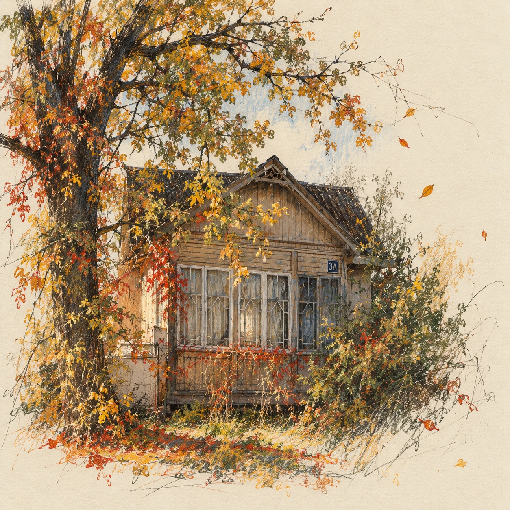
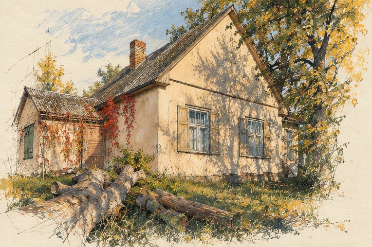
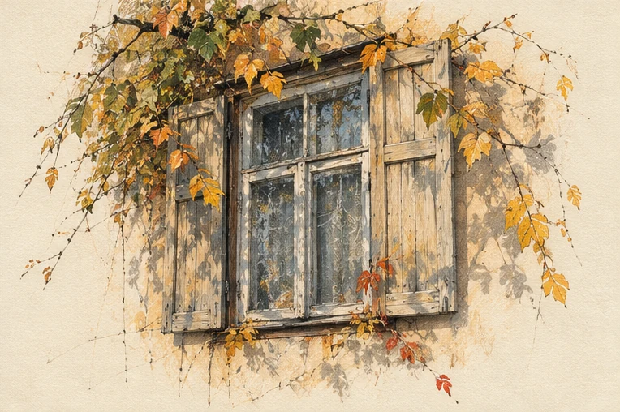
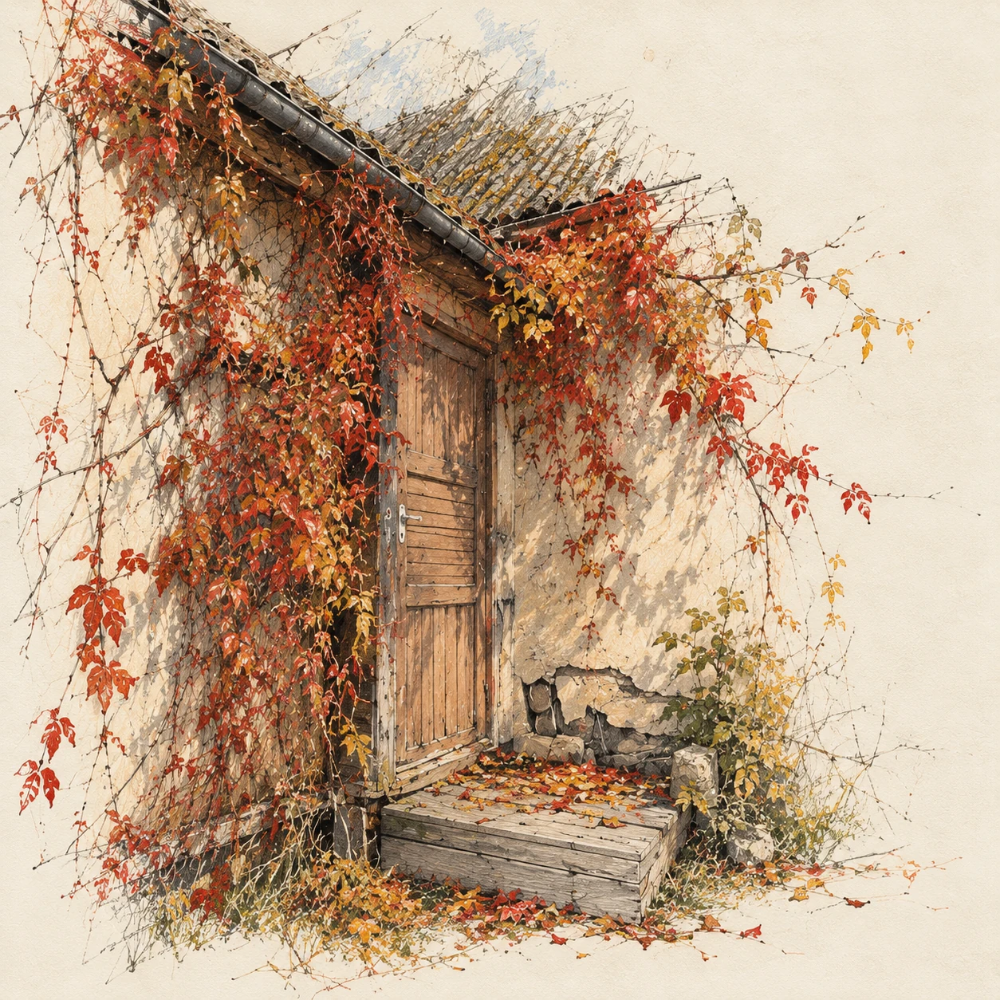

Сказка
Улица Мира,
3а

— Грядки — это не унижение, а форма свободы, — сказала Анна человеку, которого знала двенадцать минут.
— Свободы от чего?
— От необходимости покупать укроп в пластиковом гробу.
Молодой человек рассмеялся так, будто Анна сказала что-то значительно более остроумное. Его благодарность не знала границ. Двенадцать минут назад на кассе ему не хватило двух евро с мелочью, Анна добавила, а он вместо того, чтобы сказать спасибо и исчезнуть, пошёл за ней.
— Я ваш должник.
— Я прощаю вам эти два сорок.
— Нет. Добро надо возвращать добром.
Он никак не отставал. Шёл рядом с пакетом апельсинов и расспрашивал, почему человек в прекрасном европейском городе мечтает о грядках.
Анна объяснила. Когда-то у неё был дачный дом, яблоня, три кривые грядки и сарай, который никак не решался упасть. Это было в другой жизни, в другом государстве, в мире, где Анна ещё не была гражданином страны-агрессора и вечным изгоем. Теперь у неё съёмная квартира и два горшка на подоконнике.
— Дом нужен человеку, — сказала она. — Земля. Чтобы выйти утром босиком и увидеть, что у тебя опять всё сожрали слизни.
— Очень убедительная реклама. Я аж представил эту холодную липкость под ногами...
— Не смейтесь, — Анна вдруг стала серьёзной. — Потому что дому тоже нужен человек. Без своего человека дом разрушается. Вон как тот на улице Мира — он явно страдает. Взяла бы себе не думая.
Они только что прошли мимо домика: одноэтажного, с тёмными окнами и заросшим садом. Анна знала его два года. Весной там цвели яблони, летом крапива доходила до окон, осенью ветер рвал черепицу. Никто не приезжал.
— Вот и желание, — сказал её спутник.
— Какое ещё?
— Вы сделали мне добро, я сделаю вам. Исполню ваше желание!
Анна закатила глаза и пошла было дальше, но парень придержал её за рукав.
— Я серьёзно. Загадайте желание, и я исчезну.
— Вы можете просто так исчезнуть.
— Не могу — пока на мне долг.
Обычное лицо. Куртка, кеды, пакет. Городской сумасшедший эконом-класса.
— Ладно. Хочу тот дом.
Он сделал вид, что записывает.
— Назовите адрес.
— Улица Мира, три А.
— Уверены?
— Абсолютно. У меня эта табличка перед глазами стоит, — выцветшее «3а» внутренним взором она видела куда яснее, чем самокат, который сейчас её чуть не сбил.
— Окей. Дом по адресу улица Мира, три А будет ваш.
Анна повернулась, чтобы съязвить в ответ, но рядом уже никого не было.

На следующее утро ей позвонили из страховой компании.
Полгода назад она требовала возмещения за дорогие вещи, испорченные на складе при переезде. Компания долго торговалась, потом замолчала. Теперь оператор сообщил, что вместо денежной выплаты Анне могут передать имущество, оказавшееся в распоряжении страховой.
— Какое имущество?
— Жилой дом с земельным участком. Улица Мира, три «А».
Внутри у неё всё замерло.
Первой мыслью было: всё-таки псих. Второй: псих, но с админресурсом. Потом тёплое: теперь у неё будет сад.
— Движимое имущество прежних собственников в передачу не входит. Им потребуется срок, чтобы освободить помещение.
Анну это не смутило. Конечно, там были собственники. Даже у развалин кто-нибудь числится собственником. Анна даже подумала, что при случае скажет им что-нибудь хорошее: я его восстановлю. Ему со мной будет лучше.
Потом начались письма.
«Возражение против отчуждения». «Ходатайство о приостановлении». «Жалоба на действия конкурсного управляющего».
Что ж, чудеса тоже требуют бюрократии.
Прежний владелец писал всем: страховой, управляющему, в суд и ей лично. Сначала просил отказаться от сделки. Потом требовал. Потом обвинял, что она пользуется чужой бедой.
Анна ответила один раз: дом много лет стоял пустым, она не виновата в чужих долгах и собирается привести его в порядок.
Ответ пришёл почти сразу: «Вы бредите! С какого перепуга — пустой?..» Дальше Анна не читала.
Они встретились в коридоре суда. Мужчина был небрит, в мятой рубашке, с лицом тоже помятым.
— У меня там дети прописаны.
— Послушайте, я понимаю, что вам тяжело…
— Вы называете это тяжело?!
Он заговорил про ипотеку, поручительство, ошибку банка и страховщиков. Анна слушала, вспоминая развалюху с перекошенной верандой. Вот же мудак, думала она. Не был там два года, а теперь заливает. Типичный должник.
В конце она уже не могла сдержать улыбки.
— Вам смешно? Вам, блядь, это смешно? Мы всё теряем, а вам смешно?!
Люди в коридоре обернулись. Через минуту секретарь пригласил их в зал.
Представитель страховой положил перед Анной окончательное соглашение. До этой минуты она ещё собиралась попросить время на подумать. Но мужчина почти не таясь шипел сквозь зубы, глядя ей в глаза: «Воровка».
— Где подписать? — спросила Анна.
До завершения сделки на Мира она не ездила. Ей казалось суеверием входить в дом раньше времени. Анна хотела впервые прийти туда уже хозяйкой, когда чужие возражения и судебные бумаги останутся позади, а земля под ногами будет принадлежать ей не в мечтах, а по реестру.

Через три недели пришло уведомление о регистрации собственности.
Анна вызвала такси.
— Улица Мира, три А.
Машина остановилась возле синего двухэтажного дома.
— Нет. Дальше.
Таксист сверился с навигатором.
— Куда дальше? Три А — вот.
На воротах действительно висела табличка: «3а».
Во дворе стоял фургон. Тот самый мужик из суда вместе с грузчиками заталкивал туда стол. По газону были расставлены коробки, сумки, свёрнутые ковры. Женщина, которую Анна никогда прежде не видела, вытирала лицо рукавом и кричала на двух детей:
— Собирайте игрушки! Все игрушки из сада!
Младший держал пластмассовый грузовик.
— Я его здесь оставлю.
— Ничего ты здесь не оставишь.
— Но я потом приду и буду играть!
Женщина всхлипнула и отвернулась.
— Ты сюда уже не придёшь. Собирай.
Анна смотрела через закрытое стекло. Синий дом был ухоженный, с целой крышей и качелями возле яблони.
— Это точно Мира, три А? — спросила Анна.
Таксист снова ткнул пальцем в экран.
— Точнее не бывает.
Она уже достала телефон. Синяя метка геолокации абсолютно точно стояла по адресу: улица Мира, 3А. Прямо здесь.
Анна несколько секунд смотрела на экран.
— А можете отвезти меня к другому дому? Тут рядом. Маленький такой, заброшенный. Я дорогу покажу.
— А-а. Знаю. Это в переулке Мира.
— Но… Там разве не просто дорожка между участками?
Он посмотрел на неё в зеркало.
— Четыре адреса на той «дорожке».
Анна снова посмотрела на телефон. Потом — на женщину, которая отбирала у ребёнка игрушечную лопатку и бросала её в коробку.
Такси тронулось.
Через минуту знакомая узкая дорожка открылась между заборами. Дом стоял на месте всё с теми же тёмными окнами и выцветшими символами «3а» на углу. Анна вышла из машины. Впервые прошла вперёд — почти вплотную к руине своей мечты. На заборе, под ветками давно нестриженных кустов, действительно висела табличка: «Переулок Мира».

Через неделю ей пришлось вернуться на улицу Мира — подписать акт передачи. Семья вывозила последние вещи и демонстративно игнорировала преемницу.
Из дома вышел грузчик с коробкой. Анна узнала кеды раньше лица и вскипела.
— Ты, сволочь.
— О, привет! — Молодой человек оглянулся на дом. — Ну что, поздравляю!
— Я не этого хотела.
— Разве? Нет, я точно помню: дому нужен человек, улица Мира, три А.
— Я хотела другой дом!
Он посмотрел на фасад.
— Этот лучше. Крыша целая.
— Он чужой.
— Ну да. — Молодой человек перехватил коробку. — Тот тоже был чужой. Почему вдруг это стало важно?
Он пошёл к машине.
— Девушка, вот, — сотрудник страховой вложил Анне в ладонь три комплекта ключей. На одном из них остался брелок — маленькая керамическая собачка. — Кстати, если решите застраховать, а я бы очень советовал, у нас сейчас акция…
Анна не отвечала.